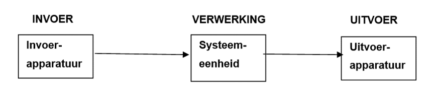

Informatica is een vak waarin we leren hoe computers werken en hoe we ze kunnen gebruiken om problemen op te lossen. We leren bijvoorbeeld hoe we programma's kunnen maken, gegevens kunnen organiseren en websites of apps kunnen bouwen. Het vak is belangrijk omdat het helpt om de technologie te maken die we elke dag gebruiken, zoals telefoons en sociale media. Het is een interessant vak waar we veel van kunnen leren!
Invoer en uitvoer zijn essentiële concepten in de informatica, omdat computers continu gegevens verwerken en communiceren met de wereld om hen heen. Met invoer en uitvoer verwijzen we naar de stroom van gegevens tussen het computersysteem en externe bronnen. Uitvoer is het proces waarbij verwerkte gegevens van de computer naar externe apparaten of gebruikers worden gestuurd. Dit kan bijvoorbeeld gebeuren door documenten af te drukken op een printer of geluid via een speaker af te spelen. Invoer daarentegen is het proces waarbij gegevens van externe apparaten naar het computersysteem worden overgebracht, zoals via toetsenborden, muizen, camera's en microfoons. Samen zorgen invoer en uitvoer ervoor dat computers effectief kunnen functioneren en interactie kunnen hebben met hun omgeving.
